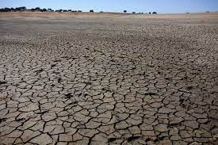

Seca no Alentejo
O Alentejo enfrenta atualmente uma situação de seca preocupante, com impactos significativos em várias frentes. A escassez de chuvas na região tem resultado em sérias consequências para a agricultura, ecossistemas locais e reservas hídricas, acendendo um alerta para a necessidade de ações imediatas.
A agricultura, pilar fundamental da economia alentejana, está sob pressão devido à falta de chuvas e à diminuição dos recursos hídricos. Culturas tradicionais e pastagens sofrem com as condições adversas, levando a preocupações crescentes sobre a sustentabilidade e a segurança alimentar na região.
Nesta análise preliminar, examinaremos a extensão da seca no Alentejo, avaliando o impacto sobre as comunidades locais, a flora e fauna, bem como as medidas que estão sendo implementadas para enfrentar essa crise hídrica. A seca no Alentejo não é apenas um desafio local, mas destaca a necessidade urgente de estratégias de gestão da água e adaptação às mudanças climáticas em níveis mais amplos.
